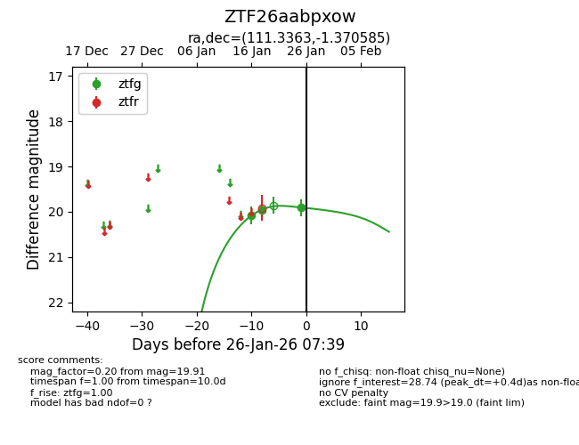
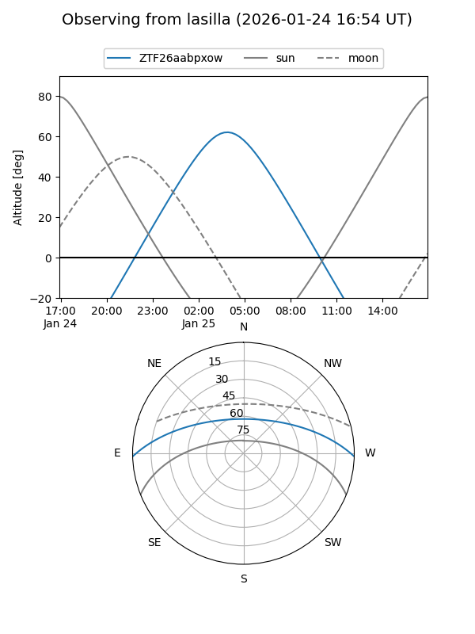
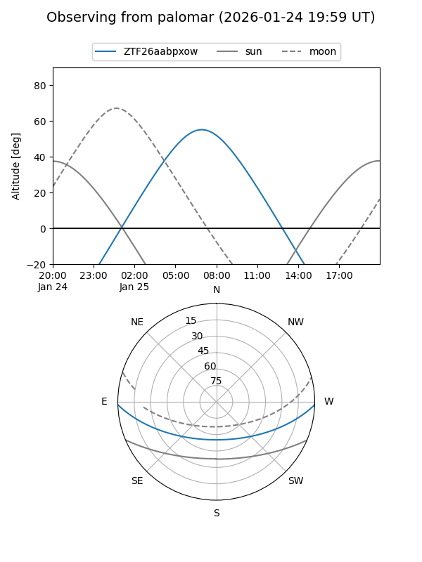
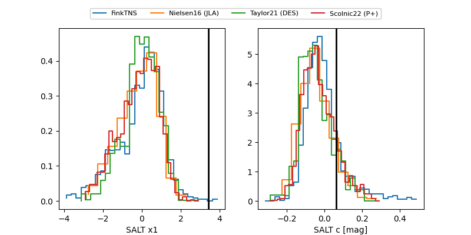

ZTF26aabpxow
Target ZTF26aabpxow at 2026-01-28 07:01
Aliases and brokers:
FINK: link
Lasair: link
ALeRCE: link
alt names
ZTF26aabpxow (ztf,fink_ztf)
Coordinates:
equatorial (ra, dec) = 111.3363,-1.37058
equatorial (HMS+DMS) = 07:25:20.71,-01:22:14.11
galactic (l, b) = (218.0456,+6.90642)
Flags:
Photometry:
last ztfg=19.76
4 ztfg detections
Lightcurve

Visibility


Additional plots
